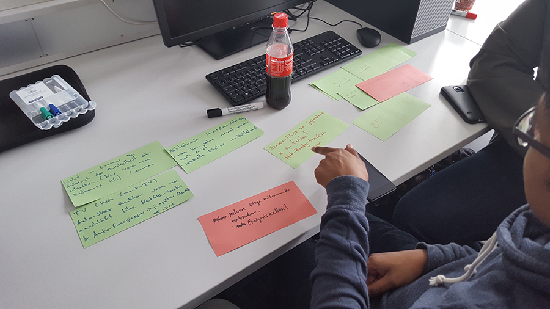
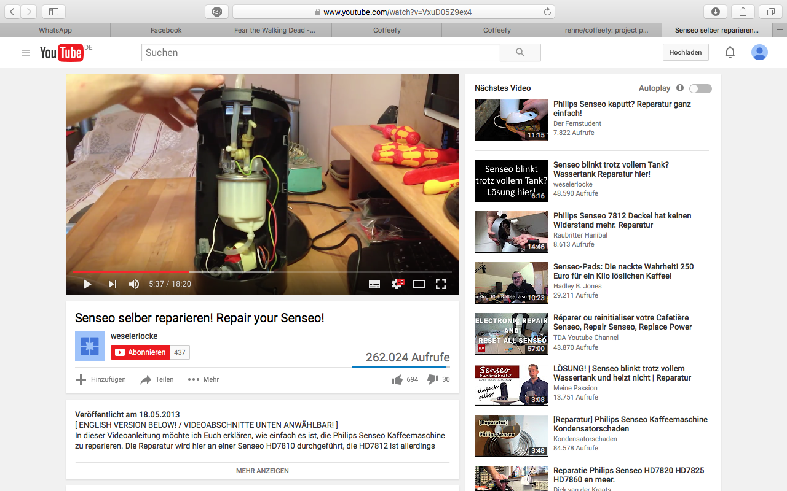
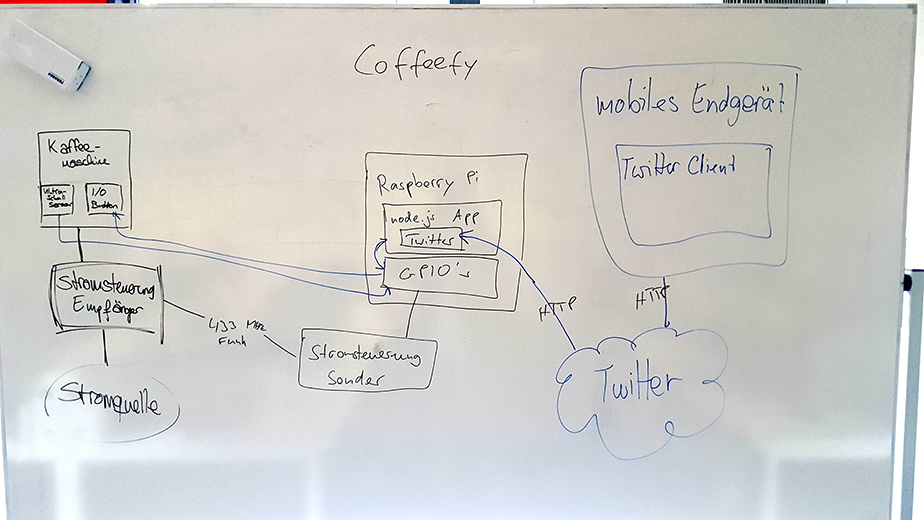
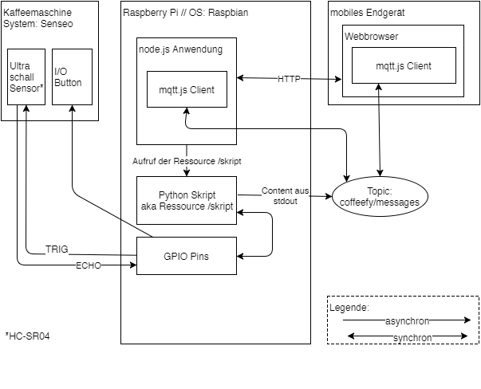
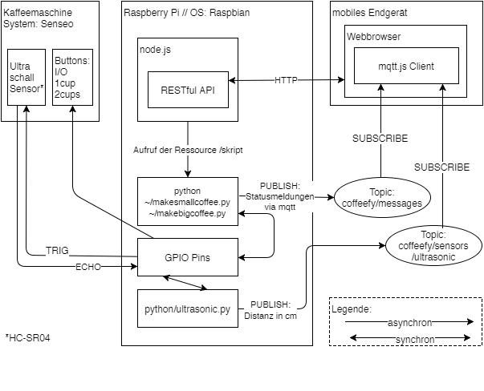
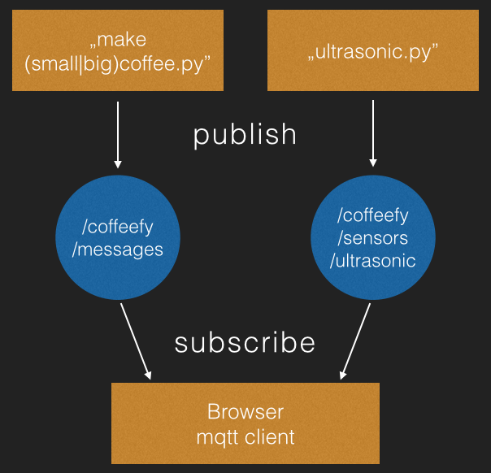

Coffeefy
The Senseo Whisperer
Ein Projekt der Technischen Hochschule im Rahmen des Wahlpflichtfaches Internet of Things
von:
Idee

Komponenten
- Raspberry Pi 3
- Senseo 7810 Kaffee Maschine
- HC-SR04 Ultrasonic Sensor
- 3 Relays
- 2 Widerstände (680Ohm / 1kOhm)
- Breadboard, Kabel, etc.
Umsetzung
Der Umbau
 https://www.youtube.com/watch?v=VxuD05Z9ex4Knöpfe anlöten & Kabel verlegen
Idee Systemarchitektur
Umsetzung Systemarchitektur

Umsetzung Systemarchitektur 2.0
Umsetzung Systemarchitektur 3.0
MQTT Kommunikation
Programmierung
Auf den folgenden Folien wollen wir ein paar Code Schnipsel zeigen
Ultrasonic sensor
def MeasureDistance():
GPIO.output(TRIG, True)
time.sleep(0.00001)
GPIO.output(TRIG, False)
StartTime = time.time()
while GPIO.input(ECHO) == 0:
StartTime = time.time()
while GPIO.input(ECHO) == 1:
StopTime = time.time()
TimeElapsed = StopTime - StartTime
Distance = (TimeElapsed * 34300) / 2
return Distance
Ultrasonic sensor
try:
#Kontinuierliches pushen der Distanzwerte auf das mqtt Topic
while True:
date = str(datetime.datetime.now())
print "[" + date + "] " + Distance + "cm .Running..."
Distance = MeasureDistance()
mqttc.publish("coffeefy/sensors/ultrasonic", "%.1f" % Distance)
time.sleep(1)
make coffee
# Kaffeemaschine einschalten
pressPowerBtn()
for x in xrange(0,90):
mqttc.publish("coffeefy/messages", 'Heating water.. %d' % (90-x))
time.sleep(1)
# Auswahl des Programms
press2CupBtn()
for x in xrange(0,40):
mqttc.publish("coffeefy/messages", 'Preparing cup.. %d' % (40-x))
time.sleep(1)
mqttc.publish("coffeefy/messages", "Done!")
pressPowerBtn()
def press2CupBtn():
GPIO.output(SIG_2CUP, True)
time.sleep(0.5)
GPIO.output(SIG_2CUP, False)
script in der index.html
client.subscribe("coffeefy/messages");
client.subscribe("coffeefy/sensors/ultrasonic");
client.on("message", function(topic, payload) {
if (topic == "coffeefy/messages") {
output_messages.innerHTML = payload;
$(document).ready(function(){
if(payload.length > 5){
$('.btn').prop('disabled', true);
} else {
$('.btn').prop('disabled', false);
}
})
}
Probleme
Umstellung Python -> Node.js
Fazit / Aussicht
Countdown fertig implementieren
weitere Sensoren
Demo
Quellen
- (Youtube) Senseo reparieren
- Idee für die Automation des "Knöpfe-Drückens"
- (Youtube) Schaltplan Ultrasonic Sensor
- Script für den Ultrasonic Sensor